GENERATIVE ART OF ILLUSION
本作品は、杉原厚吉による「変身立体」に着想を得た錯視である。変身立体は、立体の輪郭形状を工夫することで、見る向きによって異なる形に見せる。本作品では表面を平らな板とし、そこに細い溝を彫る。斜めから見ると、溝の奥は手前の縁に隠れて見えない（これを遮蔽という）。この隠れ方を溝ごとに設計することで、見る向きによってまったく異なる絵が見える。
手前から見ると葛飾北斎「冨嶽三十六景 凱風快晴」（赤富士）が、奥に立てた鏡の中ではフェルメール「真珠の耳飾りの少女」が見える。塗りは一色のみであり、2 つの絵の違いは溝の形状だけから生じる。遮蔽を利用するため、濃淡を含む複雑な名画 2 枚を 1 枚の板に同時に描くことができる。
家庭用の 3D プリンター（溶かした樹脂を細く押し出し、薄い層を積み重ねて立体を作る装置。Bambu Lab P1S）で造形できるように設計し、実際に造形して効果を確認した。設計のコードは Claude Code（モデルは Claude Opus 5.5）を用いて作成した。
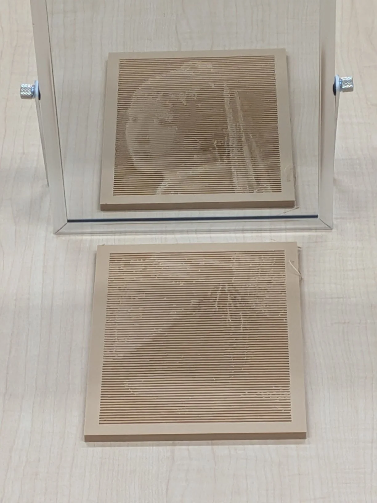
3 章の「平らな版の設計データ」の形状データ（STL ファイル）を、家庭用の 3D プリンター Bambu Lab P1S で造形した。樹脂を押し出す口（ノズル）の直径は標準の 0.4 mm、材料は明るい色の PLA 樹脂 1 色である。大きさは 110 × 150 × 5.3 mm、実際の造形時間は約 3 時間であった（プリンター用ソフト Bambu Studio の見積もりは約 1 時間 40 分）。造形後に溝へ黒い塗料を入れる「墨入れ」や、塗装は行っていない。
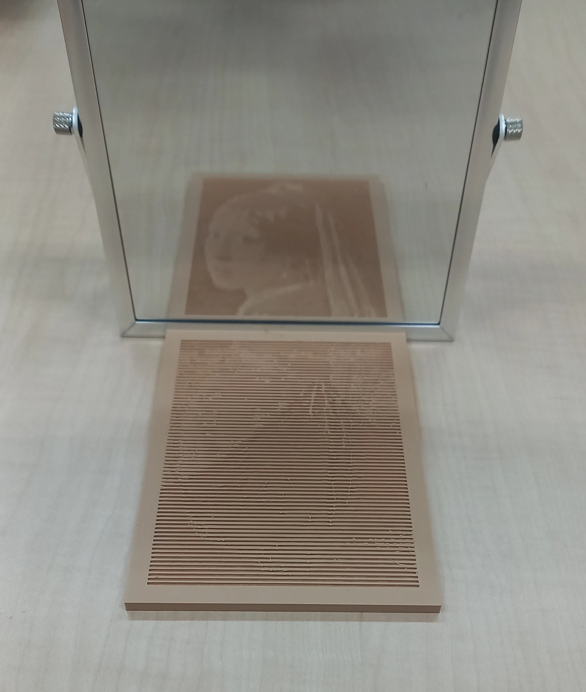
手前では赤富士が、鏡の中では少女が、いずれも明瞭に見えた。1 色で造形しただけの平らな板で、設計どおり 2 つの絵が入れ替わる。墨入れをしなくても、溝の中の陰だけで絵に必要な明暗が得られた。板を 180° 回転させると、手前に少女が、鏡の中に赤富士が現れる（動画）。
一方、見る角度や照明によっては、手前の板にもう一方の絵の輪郭がうっすらと浮かぶ（写真の手前の板）。この透けは、設計上の俯角（見下ろす角度）45° より高い位置から見ると目立つ。濃淡の少ない線画では、透けはほとんど生じなかった（下）。
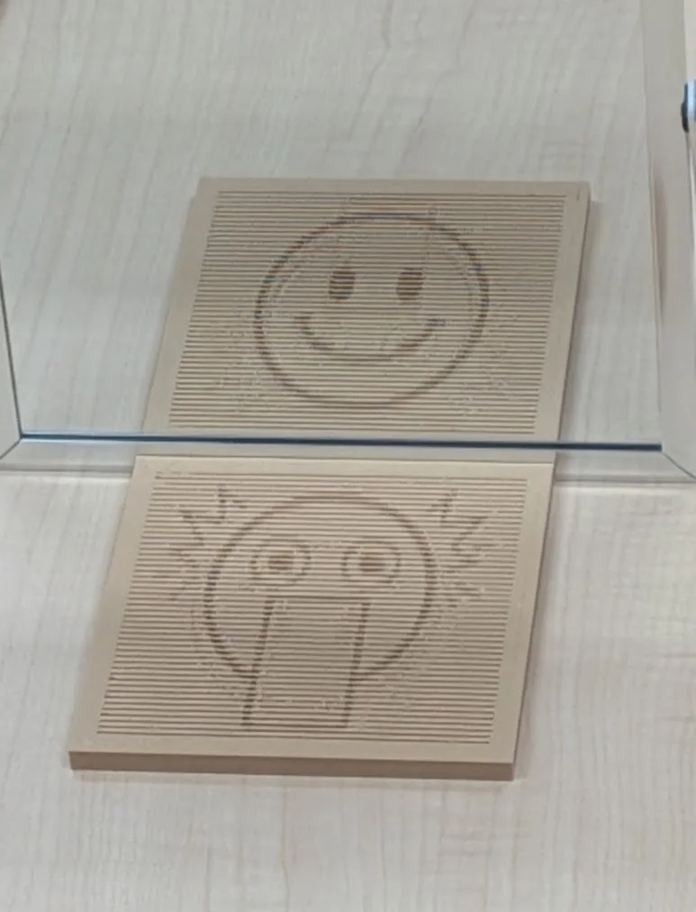
太い線だけの絵で試みた試作である。手前の板には驚いた顔が、鏡の中には笑顔が見える。線画では、もう一方の絵の透けはほとんど見られない。
濃淡のある名画では面の明るさを細かく作り分ける必要があるため、見る角度が設計からずれたときの透けが線画より生じやすい。
目に映る像や写真は平面であり、奥行きは写らない。たとえば、遠くにある大きな物と近くにある小さな物は、同じ大きさに写ることがある。言い換えると、ある 1 つの向きから見た像を決めても、立体の形は 1 通りには決まらず、奥行き方向に自由に動かせる余地が残る。杉原厚吉の「変身立体」はこの余地を利用し、ある向きからは四角に、反対の向きからは丸に見える立体を作っている。本作品も同じ考え方に基づく。
板を横から見た断面で考える。奥行きを y、高さを z とする。この点を、手前と奥から、それぞれ俯角（見下ろす角度）45° で見る。像の中で点が写る高さを、手前から見た像では vA、奥から見た像では vB とする。左右の位置は、どちらから見ても同じであるため、考える必要があるのは高さだけである（十分遠くから見る場合を考える）。
点を奥へずらすと、手前から見た像では点が上に上がって見え、奥から見た像では下に下がって見える（奥の観察者に近づくため）。一方、点を上へ持ち上げると、どちらから見ても上に上がって見える。この関係を式で表すと次のようになる（sin 45° = cos 45° = 1/√2）。
これは 2 つの未知数 y、z についての連立一次方程式であり、2 式を足したり引いたりすれば解ける。
つまり、「赤富士ではこの点をこの高さに見せたい」「少女ではこの高さに見せたい」と 2 つの値を決めれば、その点を置くべき奥行きと高さがちょうど 1 つ決まる。2 枚の絵を同時に描けるのは、このためである。
板の上面には、深さ 1 mm の細い溝を、左右いっぱいに等間隔で 71 本彫る。斜め 45° から見下ろすと、溝の底や奥の壁は手前の縁に隠され（これが遮蔽である）、溝は暗い線に見える。溝と溝の間の平らな面は明るく見える。明るい面が広く見える所ほど、その部分は全体として明るく見える。新聞の写真が、細かい点の大きさだけで濃淡を表すのと同じ考え方である（網点）。
ここで、面の手前の縁と奥の縁の高さを、ほんのわずかにずらす。面が奥に向かって上がっていると、手前の観察者には面がこちらを向くので広く見え、奥の観察者には面が向こうへ傾くので狭く見える（下図）。面の奥行きを Δy、奥の縁と手前の縁の高さの差を Δz とすると、上の式から、手前と奥での見かけの幅 wA、wB は次のようになる。
たとえば Δy = 1.0 mm、Δz = 0.3 mm のとき、wA は約 0.92 mm、wB は約 0.49 mm となる。同じ 1 枚の面が、手前からは奥からの約 1.9 倍の幅に見える。逆に、欲しい wA と wB を先に決めれば、Δy = (wA + wB) / √2、Δz = (wA − wB) / √2 によって面の形が 1 つに決まる。
溝の断面（左が手前、右が奥）。傾きは説明のため誇張して描いている。実際の高さの差は 0.5 mm 以下であり、上面の起伏は ±0.25 mm 程度である。
こうして、71 本の溝の間の面ごとに、手前から見た幅は赤富士の明暗に合わせ、奥から見た幅は少女の明暗に合わせて決める。片方の絵のために決めた幅は、もう片方の絵の幅を変えない。溝の位置は等間隔のままであるため、どちらから見ても、まっすぐな線が並んだ版画のように見える。
ただし、面が少しでも傾くと、光の当たり方が変わって面そのものの明るさも変わる（光源の方を向いた面は明るく、背を向けた面は暗くなる）。この明るさの変化は手前と奥の両方の像に現れるため、そのままでは、もう一方の絵がうっすら透けてしまう。そこで、見かけの幅と傾きによる明るさの変化をまとめて式に表し、2 つの絵の明るさが同時に狙いどおりになるよう、面ごとに連立方程式を解いて形を決めている。
面の見かけの幅は、手前・奥それぞれ、溝の間隔の 18〜82 % の範囲で決める。この範囲であれば、どの組み合わせでも、溝の幅と面の幅が 0.5 mm（0.4 mm ノズルで造形できる下限）を下回らない。
最後に、人の思い込みが錯視を助ける。観察者は板の上面を平らであると解釈する。本当に平らな板に描かれた線画であれば、奥から見ても同じ絵が上下逆さに見えるだけである。本作品では、同じ溝がまったく別の絵を描く。
奥からの絵は、裏へ回らなければ見ることができない。作品の奥に鏡を立てると、手前に立ったまま奥からの視点の像を同時に観察できる。鏡は鏡に垂直な方向（ここでは奥行き）だけを反転し、左右は入れ替えない。そのため、少女は正しい向きで映る。裏へ回って直接見ると、少女は左右反転して見える（下の切り替えボタン）。
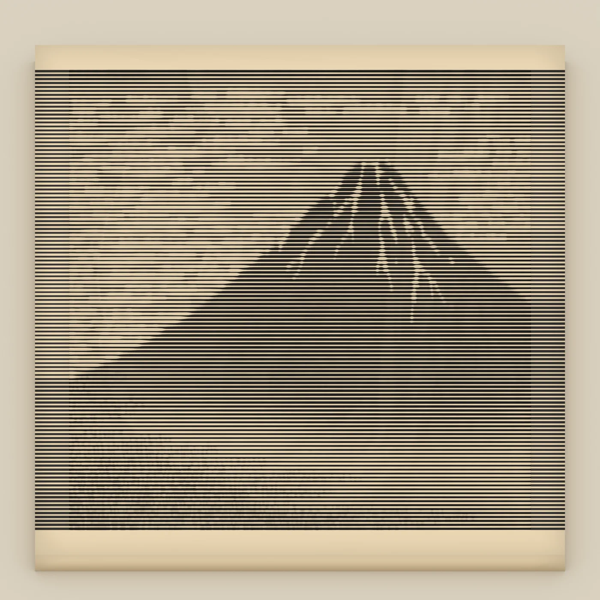
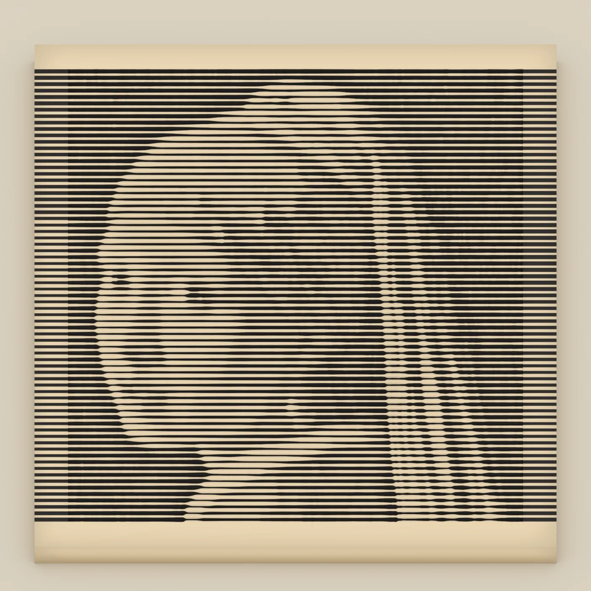
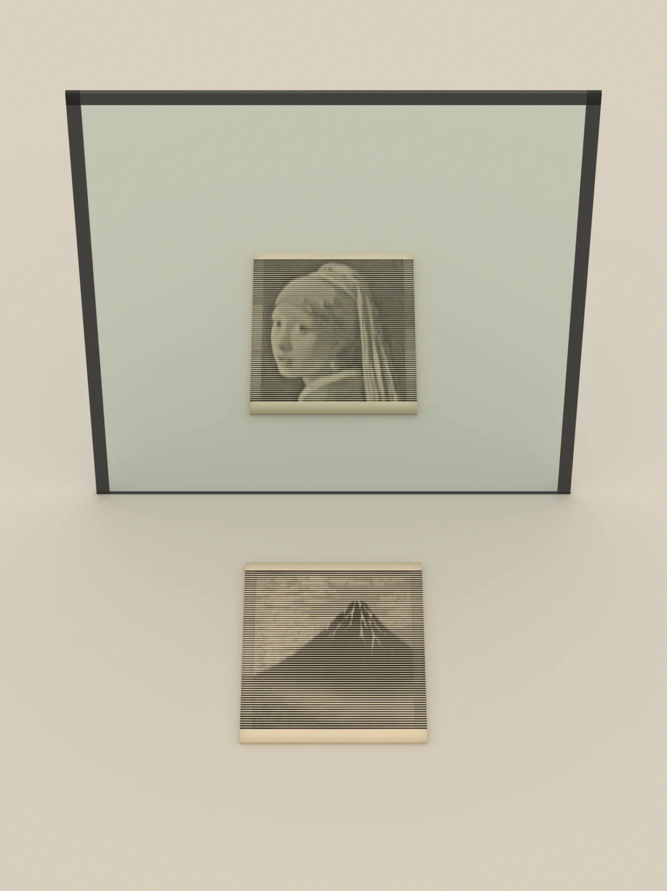
設計した形を 3DCG ソフト Blender で実寸どおりに描いた再現画像（溝に墨を入れ、上からやわらかい光を当てた条件）。
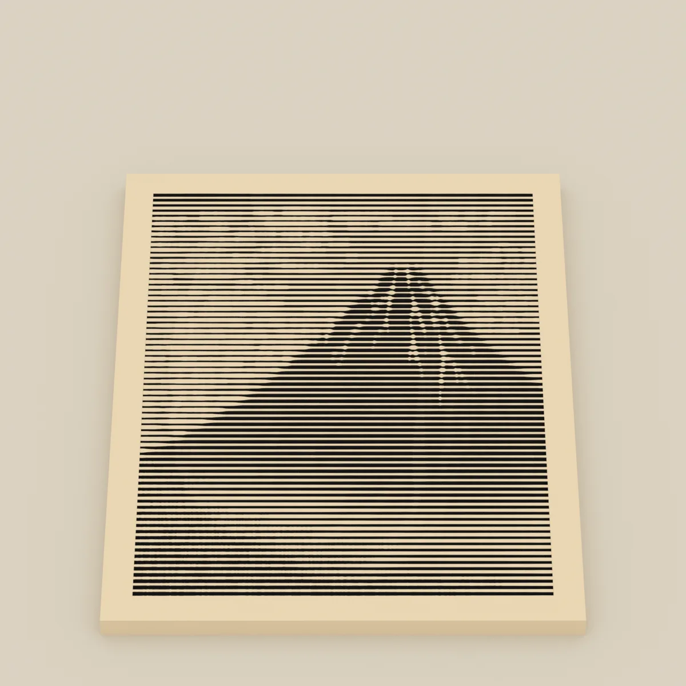
方位 0°
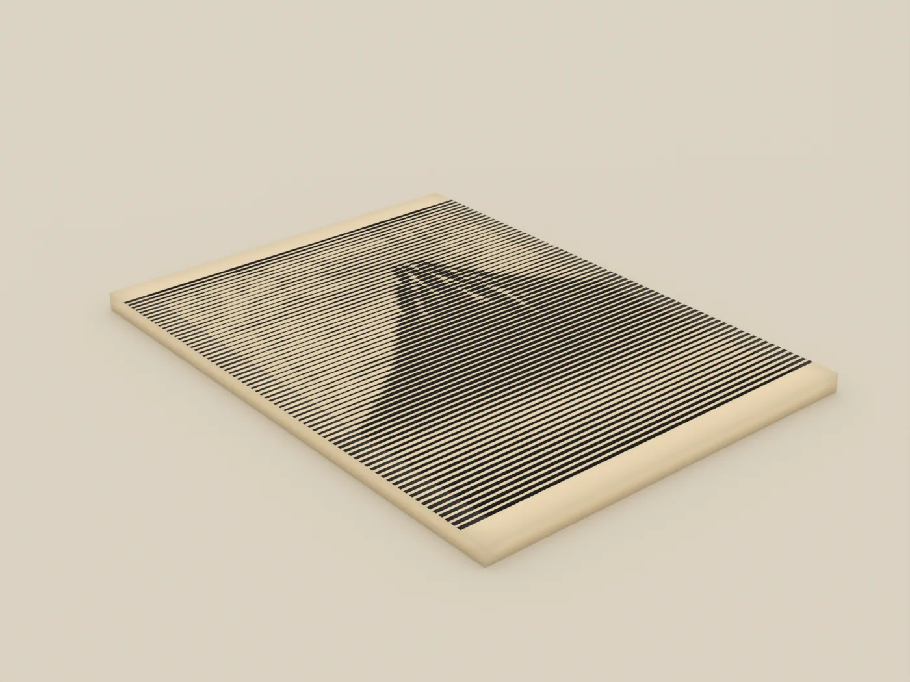
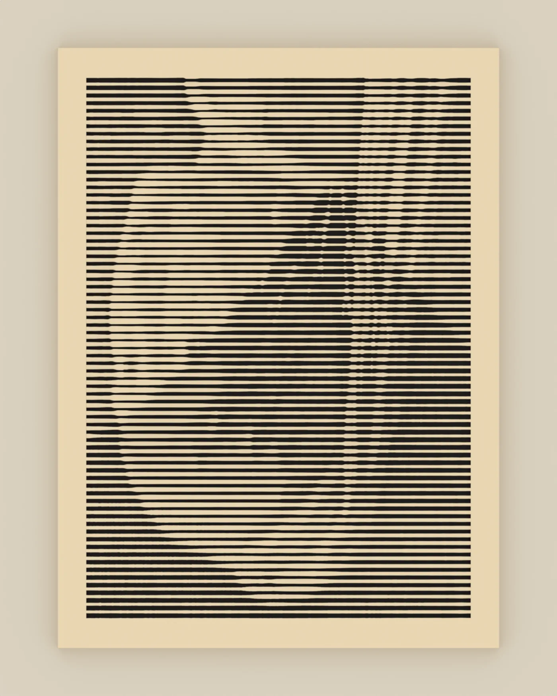
設計は「俯角 45°・真正面」を前提とするが、角度が多少ずれても絵は保たれる。角度が変わっても溝が並ぶ順番は入れ替わらないため、絵は急に消えることなく、少しずつ変形するだけである。最も良好に見えるのは、俯角 45° かそれよりやや低い位置から見た場合である。
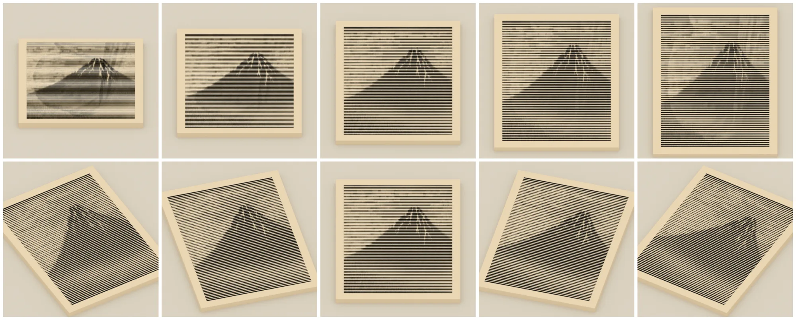
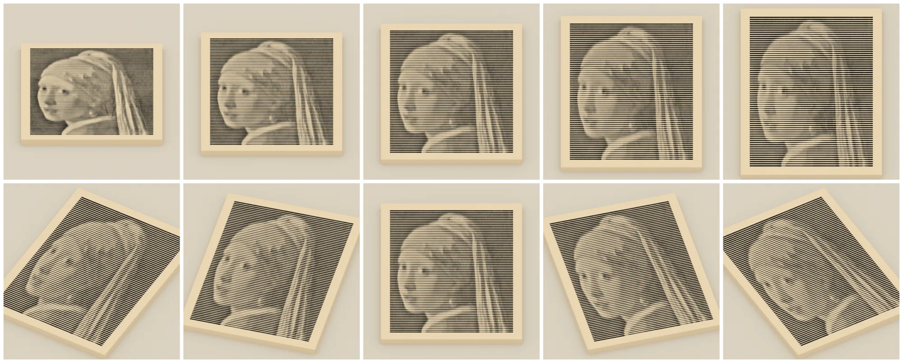
| 条件 | 見え方（再現） |
|---|---|
| 俯角 30〜45° | どちらの絵もはっきり読める |
| 俯角 52〜60° | 読めるが、もう一方の絵の輪郭が透けてくる（52° でうっすら、60° ではっきり） |
| 左右 ±15° | 読める（絵が傾き、少し歪む） |
| 左右 ±30° | 読めるが、大きく歪む |
| 距離 0.5 m 以上 | 問題なし（線が溶け合って明暗に見えるのは、およそ 1〜1.5 m から） |
実際に造形した版のデータである。Bambu Lab P1S の標準の 0.4 mm ノズルで造形できるよう、寸法・溝の幅・溝の間の面の幅を実寸で定めている。スライサー（形状データを、プリンターが動く経路に変換するソフト）での拡大・縮小は行わないこと。拡大・縮小すると溝の幅がノズルに合わなくなり、錯視も崩れる。
| 形 | |
|---|---|
| 板の大きさ | 110 × 150 × 5.3 mm |
| 絵の部分 | 手前からも鏡の中でも 96 mm 角の正方形に見える |
| 溝 | 71 本・等間隔（1.92 mm）・深さ 1.0 mm |
| 最も細い溝 / 溝の間の面 | 0.50 mm / 0.50 mm |
| 上面の起伏 | ±0.25 mm 程度 |
| 設計した視点 | 俯角 45°・十分遠くから見た場合（平行投影） |
| 造形設定（Bambu Studio） | |
|---|---|
| プリンター | Bambu Lab P1S・0.4 mm ノズル |
| 工程・積層ピッチ（1 層の厚さ） | 0.12mm Fine @BBL X1C・0.12 mm |
| 壁生成（壁の作り方） | Arachne（溝の間の細い面を、押し出した樹脂 1 本で作る） |
| インフィル（内部の充填率） | 15 % |
| サポート・ブリム | 支え（サポート）は不要。反りを抑えるため、外周に幅 3 mm の薄い縁（ブリム）を付ける |
| 材料 | 明るい色のつや消し PLA 樹脂（1 色） |
| 造形時間・材料 | 実測 約 3 時間（見積もり 約 1 時間 40 分）・52 g |
形状を決めるプログラムは、Anthropic の AI コーディングエージェント Claude Code（指示を受けてプログラムを書き、実行と確認まで行う AI）との対話によって作成した。使用したモデルは Claude Opus 5.5 である。作業期間は 2026 年 9 月 25 日から 30 日までの約 1 週間であり、最終的なスクリプトは Python で約 1,500 行である。
プログラムは、原理を確かめる小さな作品から順に発展させた。
設計のプログラムは Python と数値計算ライブラリ numpy だけで動作し、絵の読み込みから形状データ（STL）の書き出しまでを一括して行う。その後のスライスと再現は、Bambu Studio と Blender を外部から呼び出して行う。
| 段階 | すること | スクリプト |
|---|---|---|
| ① 絵の読み込み | 名画の画像を正方形に切り抜き、色の配列にする | convert_images.py |
| ② 明暗を作る | 絵ごとに明暗の出し方を決める。赤富士は青の成分を重視して明るさを計算し、空と雪を明るく、赤い山を暗くする。少女は周囲との明暗の差を 1.5 倍に強め、目・鼻・口がはっきり出るようにする | design_flat.py |
| ③ 面の幅を解く | 71 本の溝の間の面ごとに、手前と鏡での見かけの幅（溝の間隔の 18〜82 %）を、2 つの絵の明るさが狙いどおりになるよう連立で解く。溝と面の幅は 0.5 mm 以上、面の傾きは上限以下という制約を守る | design.py（solve） |
| ④ 溝の縁を作る | 見かけの幅から、各溝の手前の縁と奥の縁の空間曲線を、原理の式で求める | design.py（build_edges） |
| ⑤ 自動検証 | 最も細い溝と面が 0.5 mm 以上か、面の傾きが大きすぎないか、板がプリンターで作れる大きさ（256 mm 角）に収まるかを調べる | design.py（validate） |
| ⑥ 見え方の再現 | Bambu Studio の画面表示と同じ照明計算で、俯角 45° の手前と鏡の中の像を描く。もう一方の絵の透けの量もここで測る | design.py（render） |
| ⑦ 立体にする | 上面を小さな三角形の集まり（メッシュ）で表し、どの辺もちょうど 2 枚の三角形で共有される、穴のない閉じた立体であることを確かめて、STL・3MF に書き出す | design.py（mesh） |
| ⑧ スライス | Bambu Studio をプログラムから動かし、P1S 用の標準設定に壁の作り方（Arachne）などの設定を加えてスライスする | slice_p1s.py |
| ⑨ G-code の照合 | G-code から樹脂の押し出し経路を読み、線の太さを付けて、設計の断面と 1 層ごとに重ねる。欠けた面とふさがった溝を数える（どちらも 0） | check_lands.py |
| ⑩ 実寸での再現 | Blender に実寸の板・鏡・照明・カメラを置き、展示写真や一周する動画、角度を変えた比較を描く | build_blend.py |
3D プリントには 1 回あたり約 3 時間を要する。そこで、Bambu Studio の照明を式で再現する機能をプログラムに持たせ、形状を変更するたびに 2 つの絵と透けの量を数秒で確認できるようにした。Claude Code はこの画像を自ら読み取り、透けや崩れがないことを確認したうえで報告する。
設計上は造形できるはずであっても、スライサーが細い面を省略することがある。そこで G-code を読み込んで設計の断面と重ね、すべての層で面が欠けないこと、および溝がふさがらないことを、数を数えて確認した。
数値上は良好であっても、再現画像や実物を作者が見て問題が認められた場合には、方式から作り直した。
プログラムはすべて、3 章の「データ一式」の scripts/ に収録している。